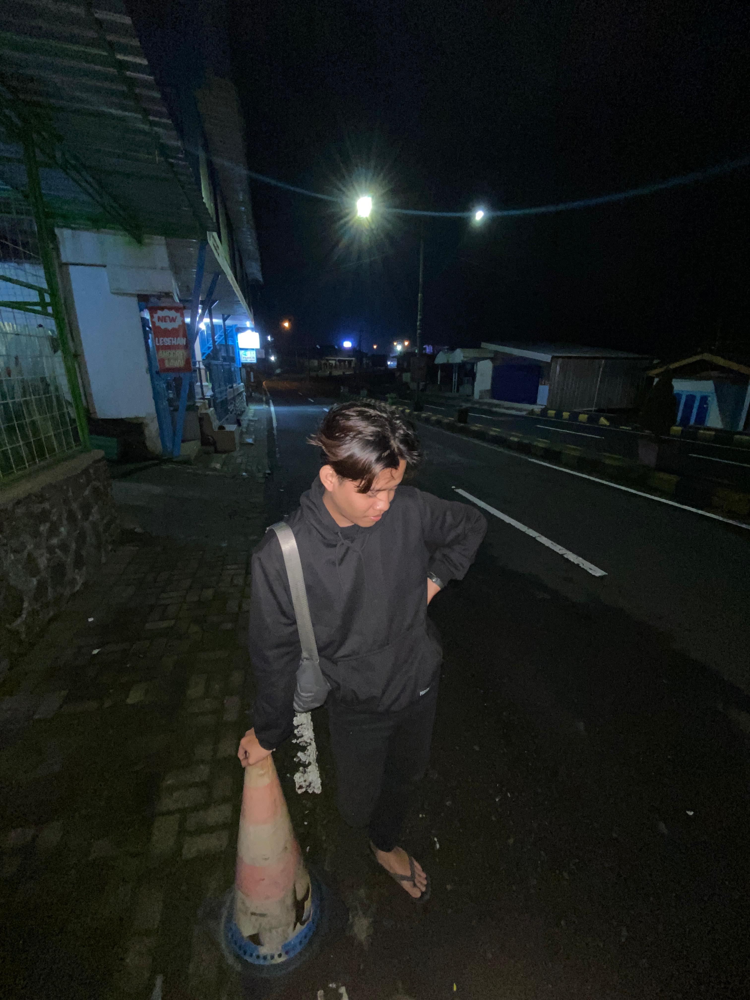
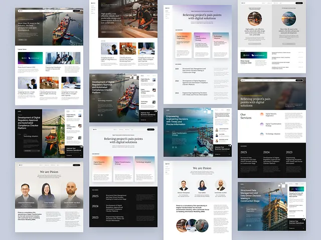

D3 Teknik Komputer
Titan Gerald Nalendra
Junior Network Administrator
Mahasiswa D3 Teknik Komputer yang memiliki minat pada jaringan komputer, pemrograman, dan teknologi informasi. Siap berkembang melalui project, pelatihan, dan pengalaman kerja di bidang IT/networking.

Focus Area
Networking, troubleshooting, and IT support basics.Tentang Saya
Profil singkat untuk kebutuhan magang IT dan networking.
Saya adalah mahasiswa Program Studi D3 Teknik Komputer di Universitas Duta Bangsa Surakarta yang memiliki ketertarikan pada bidang jaringan komputer, pemrograman, dan teknologi informasi. Saya aktif dalam pembelajaran, terbiasa bekerja dalam tim, dan memiliki motivasi tinggi untuk mengembangkan keterampilan teknis melalui proyek, pelatihan, dan pengalaman kerja.
Mahasiswa D3 Teknik Komputer
Minat di bidang jaringan komputer
Siap belajar dan berkembang
Cocok untuk magang IT/networking
Pengalaman
Pengalaman langsung menangani perangkat dan kebutuhan pengguna.
- Melakukan pemeriksaan dan diagnosis kerusakan pada perangkat.
- Membantu proses perbaikan software sesuai prosedur.
- Melakukan instalasi ulang sistem operasi serta pembaruan perangkat lunak.
- Mengganti komponen sederhana seperti baterai, layar, dan konektor yang mengalami kerusakan.
- Memberikan pelayanan dan konsultasi kepada pelanggan terkait permasalahan perangkat.
Pendidikan
Perjalanan pendidikan yang membentuk dasar teknis.
SMKN 2 Surakarta
Jurusan Teknik Audio Video
Universitas Duta Bangsa Surakarta
Program Studi D3 Teknik Komputer
Skill
Kemampuan teknis dan pendukung untuk lingkungan IT support.
Technical
Skill Teknis
Winbox
Troubleshooting perangkat
Instalasi sistem operasi
Perbaikan software
Konfigurasi jaringan dasar
Pemahaman hardware komputer
Support
Skill Pendukung
Project
Project latihan dan pengalaman teknis yang relevan untuk networking.
OS
Windows, Driver Installer, Troubleshooting
Instalasi Ulang Sistem Operasi
Fix
Hardware Check, Software Repair, Problem Solving
Troubleshooting Perangkat
LAN
MikroTik, Winbox, IP Address, DHCP, NAT
Konfigurasi Jaringan Menggunakan Winbox
HTTP
Python, HTML, CSS, Localhost
Simple HTTP Server

HTML, CSS, JavaScript
Portfolio Website
Kontak